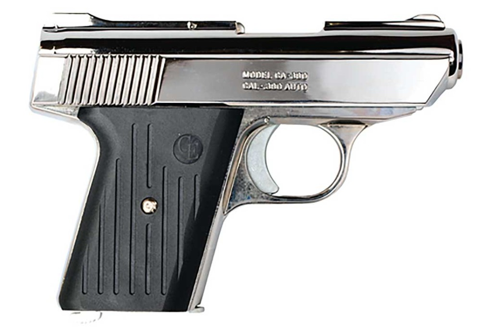
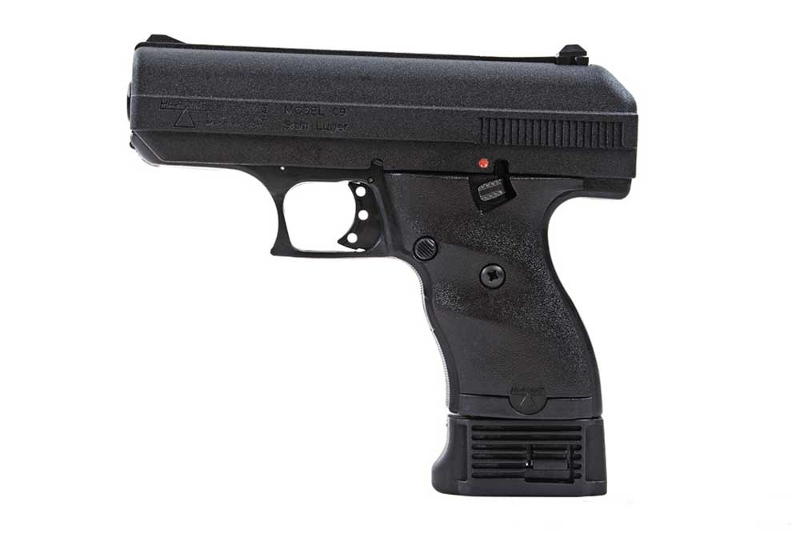
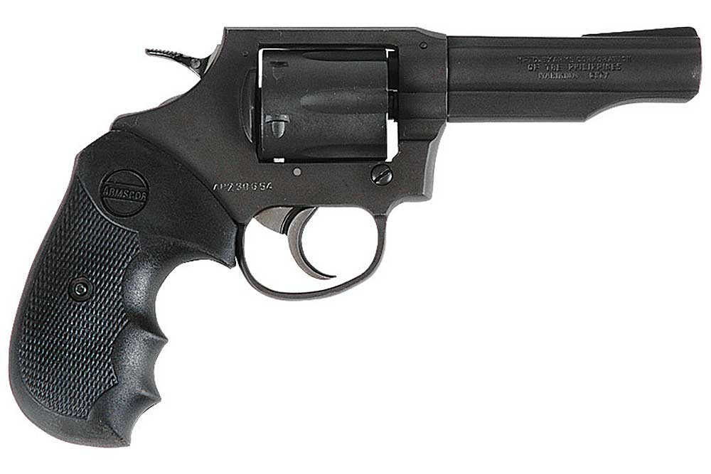

NOT Me
Last updated NEVER
At roughly $127, the Cobra Arms Freedom .380 was the least-expensive newly manufactured firearm in the US today. The pistol is wholly made and assembled in the USA (Utah), and each one comes with a lifetime warranty that follows the gun from owner to owner. When empty, the Cobra .380 weighs 24 ounces, and it has a magazine capacity of seven rounds. The Cobra is also available in .32 ACP, which gives a user another round for a total of eight. Tip: Do a search on GunBroker for "cobra .380" and you should find a few for $200 and less.
$200 Only
Founded in 1992, Hi-Point Firearms was created with a sole focus on creating reliable, cheap guns, negating complexity and aesthetics in search of their design. This led to a line of pistols and carbines that use simple mechanisms to achieve economy and reliability. One such pistol is the Hi-Point C9, a semi-automatic with a polymer frame and a large die-cast slide made from a zinc alloy. The pistol does not operate with a breech-lock, like most other handguns. Instead, sheer heft is used to hold the slide closed throughout firing, giving the gun an empty weight of 29 ounces. The C9 is chambered in 9mm and can be used with an eight or 10-round magazine. Tip: Should be able to find both used and new on GunBroker.com; search for "Hi-Point C9.
$189 Only
or those who love cheap revolvers but find the NAA .22LR to be a bit small, Rock Island Armory offers the M200 in .38 Special. Weighing in at 1.8 pounds empty, this wheelgun fires six rounds and operates in either double-action or single-action. The pistol features a 4-inch barrel, combat polymer grip and a parkerized finish. For those willing to shell out a few more bucks, RIA also offers a snubnose version with wood grips in both standard and hammerless. Above those, the company offers a matte nickel version that is also hammerless. Note: These are still produced today but now have a higher MSRP. You can still find them today in the low $200 range.
